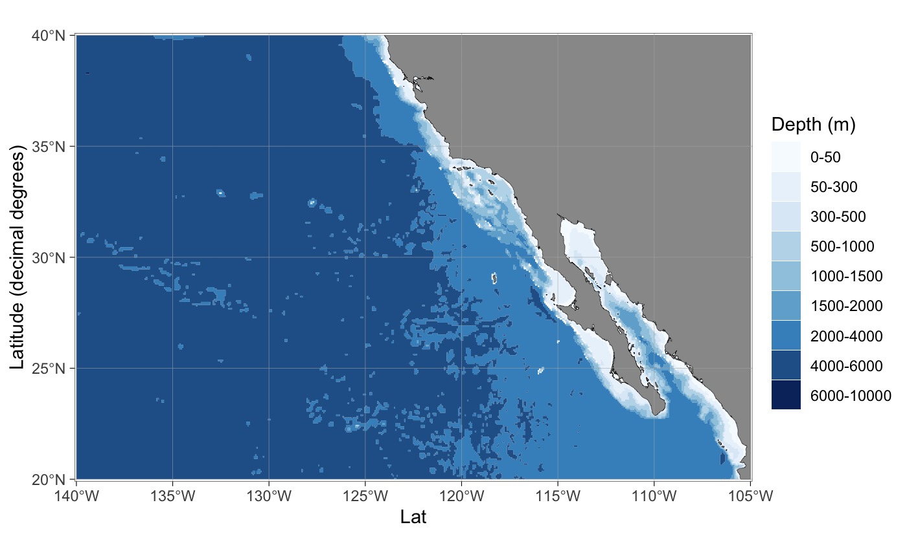
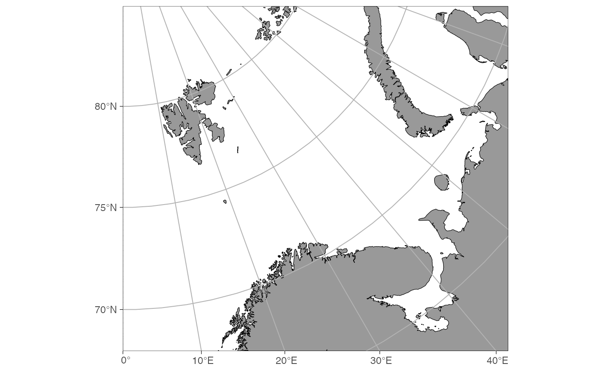

Creates a ggplot2 basemap for further plotting of variables.
basemap( limits = NULL, data = NULL, shapefiles = NULL, bathymetry = FALSE, glaciers = FALSE, resolution = "low", rotate = FALSE, legends = TRUE, legend.position = "right", lon.interval = NULL, lat.interval = NULL, bathy.style = "poly_blues", bathy.border.col = NA, bathy.size = 0.1, land.col = "grey60", land.border.col = "black", land.size = 0.1, gla.col = "grey95", gla.border.col = "black", gla.size = 0.1, grid.col = "grey70", grid.size = 0.1, base_size = 11, projection.grid = FALSE )
Arguments
| limits | Map limits. One of the following:
Can be omitted if |
|---|---|
| data | Data frame containing longitude and latitude coordinates in decimal degrees. The limits are extracted from these coordinates and produces a rectangular map. Suited for situations where a certain dataset is plotted on a map. The function attempts to guess the correct columns and it is advised to use intuitive column names for longitude (such as "lon", "long", or "longitude") and latitude ("lat", "latitude") columns. Can be omitted if |
| shapefiles | Either a list containing shapefile information or a character argument referring to a name of pre-made shapefiles in |
| bathymetry | Logical indicating whether bathymetry should be added to the map. |
| glaciers | Logical indicating whether glaciers and ice-sheets should be added to the map. |
| resolution | Not implemented yet. |
| rotate | Logical indicating whether the projected maps should be rotated to point towards the pole relative to mid-longitude limit. Experimental. |
| legends | Logical indicating whether the legend for bathymetry should be shown. |
| legend.position | The position for ggplot2 legend. See the argument with the same name in theme. |
| lon.interval, lat.interval | Numeric value specifying the interval of longitude and latitude grids. |
| bathy.style | Character defining the style for bathymetry contours. Alternatives:
|
| land.col, gla.col, grid.col | Character code specifying the color of land, glaciers and grid lines, respectively. Use |
| land.border.col, gla.border.col, bathy.border.col | Character code specifying the color of the border line for land, glacier, and bathymetry shapes. |
| land.size, gla.size, bathy.size, grid.size | Numeric value specifying the width of the border line land, glacier and bathymetry shapes as well as the grid lines, respectively. Use the |
| base_size | Base size parameter for ggplot. See theme_bw. |
| projection.grid | Logical indicating whether the coordinate grid should show projected coordinates instead of decimal degree values. Useful to define limits for large maps in polar regions. |
Value
Returns a ggplot2 map, which can be assigned to an object and modified as any ggplot object.
Details
The function uses ggplot2, ggspatial, GIS packages of R, and shapefiles to plot maps of the world's oceans.
Projections
If the shapefiles are not specified, the function uses either the limits or data arguments to decide which projection to use. Up-to-date conditions are defined in define_shapefiles and shapefile_list functions. At the time of writing, the function uses three different projections (given as EPSG codes)
3995 WGS 84 / Arctic Polar Stereographic. Called "ArcticStereographic". For max latitude (
limits[4]) >= 60 (if min latitude (limits[3]) >= 30), and single integer latitudes >= 30 and <= 89.3031 WGS 84 / Antarctic Polar Stereographic. Called "AntarcticStereographic". For max latitude (
limits[4]) <= -60 (if min latitude (limits[3]) <= -30), and single integer latitudes <= -30 and >= -89.4326 WGS 84 / World Geodetic System 1984, used in GPS. Called "DecimalDegree". For min latitude (
limits[3]) < 30 or > -30, max latitude (limits[4]) < 60 or > -60, and single integer latitudes < 30 and > -30.
Limits
If the limits are in decimal degrees, the longitude limits ([1:2]) specify the start and end segments of corresponding angular lines that should reside inside the map area. The longitude limits are defined counter-clockwise. The latitude limits [3:4] define the parallels that should reside inside the limited region given the longitude segments. Note that the actual limited region becomes wider than the polygon defined by the coordinates (shown in Examples). Using data to limit the map expands the map all around the data points to make them fit into the map. If the limits are given as projected coordinates or as decimal degrees for maps with -60 < latitude < 60, limits elements represent lines encompassing the map area in cartesian space.
Pre-made shapefiles
If the limits are not defined as decimal degrees (any longitude outside range [-180, 180] or latitude [-90, 90]), the function will ask to specify shapefiles. The shapefiles can be defined by partially matching the names of the pre-made shapefiles in shapefile_list (e.g. "Ar" would be enough for "ArcticStereographic") or by specifying custom shapefiles.
Custom shapefiles
Custom shapefiles have to be a named list containing at least following elements:
land Object name of the
SpatialPolygonsDataFramecontaining land. Required.glacier Object name of the
SpatialPolygonsDataFramecontaining glaciers. UseNULLif glaciers are not needed.bathy Object name of the
SpatialPolygonsDataFramecontaining bathymetry contours. UseNULLif bathymetry is not needed.
See Examples.
Line width and font size
The line size aesthetics in ggplot2 generates approximately 2.13 wider lines measured in pt than the given values. If you want a specific line width in pt, use the internal function LS to convert the desired line width to ggplot2 equivalent. A similar function is also available for font sizes (FS).
References
Note that if you use this function to generate maps for a publication, it is advised to cite the underlying data. The spatial data used by this function have been acquired from following sources:
Land polygons. Natural Earth Data 1:10m Physical Vectors with the Land and Minor Island datasets combined. Distributed under the CC Public Domain license (terms of use).
Glacier polygons. Natural Earth Data 1:10m Physical Vectors with the Glaciated Areas and Antarctic Ice Shelves datasets combined. Distributed under the CC Public Domain license (terms of use)
Bathymetry. Amante, C. and B.W. Eakins, 2009. ETOPO1 1 Arc-Minute Global Relief Model: Procedures, Data Sources and Analysis. NOAA Technical Memorandum NESDIS NGDC-24. National Geophysical Data Center, NOAA. Distributed under the U.S. Government Work license.
See also
Other basemap functions:
qmap(),
shapefile_list(),
transform_coord()
Examples
# The easiest way to produce a map is to use the limits # argument and decimal degrees: # \donttest{ basemap(limits = 60)# Bathymetry and glaciers can be added using the respective arguments: basemap(limits = -60, bathymetry = TRUE, glaciers = TRUE)# The easiest way to add data on the maps is to use the ggspatial functions: dt <- data.frame(lon = c(-150, 150), lat = c(60, 90)) basemap(data = dt, bathymetry = TRUE) + geom_spatial_point(data = dt, aes(x = lon, y = lat), color = "red")#># } # Note that writing out data = dt is required because there are multiple # underlying ggplot layers plotted already: if (FALSE) { basemap(data = dt) + geom_spatial_point(dt, aes(x = lon, y = lat), color = "red") #> Error: `mapping` must be created by `aes()` } # If you want to use native ggplot commands, you need to transform your data # to the projection used by the map: # \donttest{ dt <- transform_coord(dt, bind = TRUE) basemap(data = dt) + geom_point(data = dt, aes(x = lon.proj, y = lat.proj))# The limits argument of length 4 plots a map anywhere in the world: basemap(limits = c(100, 160, -20, 30), bathymetry = TRUE)# The argument leads to expanded maps towards poles: dt <- data.frame(lon = c(-160, 160, 160, -160), lat = c(80, 80, 60, 60)) basemap(limits = c(160, -160, 60, 80)) + geom_spatial_polygon(data = dt, aes(x = lon, y = lat), fill = NA, color = "red")#># The limits are further expanded when using the data argument: basemap(data = dt) + geom_spatial_polygon(data = dt, aes(x = lon, y = lat), fill = NA, color = "red")#>## To find UTM coordinates to limit a polar map: basemap(limits = 60, projection.grid = TRUE)# Using custom shapefiles data(bs_shapes) basemap(shapefiles = list(land = bs_land, glacier = NULL, bathy = bs_bathy), bathymetry = TRUE)# grid.col = NA removes grid lines, rotate = TRUE rotates northwards basemap(limits = c(-180, -140, 50, 70), grid.col = NA, rotate = TRUE)basemap(limits = c(0, 60, 68, 80)) + theme(axis.title = element_blank(), axis.text = element_blank(), axis.ticks.x = element_blank(), axis.ticks.y = element_blank() )# }